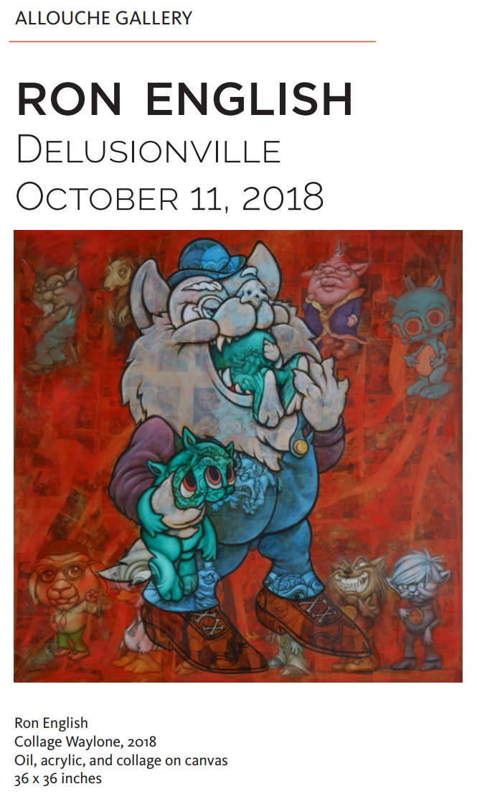
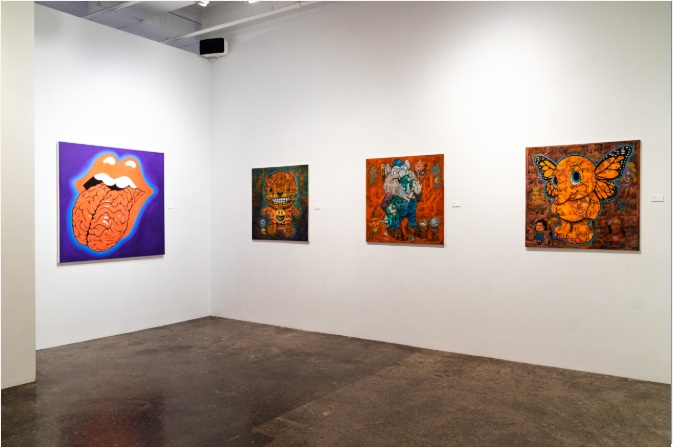
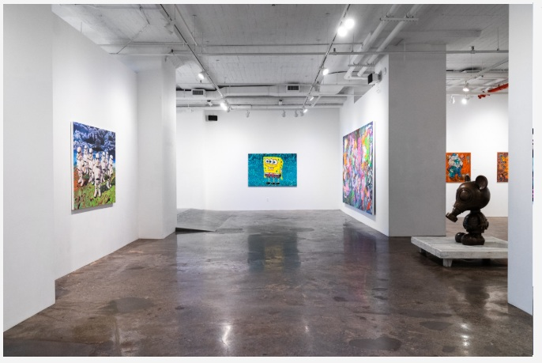

Exhibitions
Delusionville, Allouche Gallery, New York, New York, US, October 11–November 25, 2018.
Notes
Also known as Waylone.
This work is documented in the online PDF catalogue for Ron English: Delusionville published by Allouche Gallery.
Ancillary Documentation


